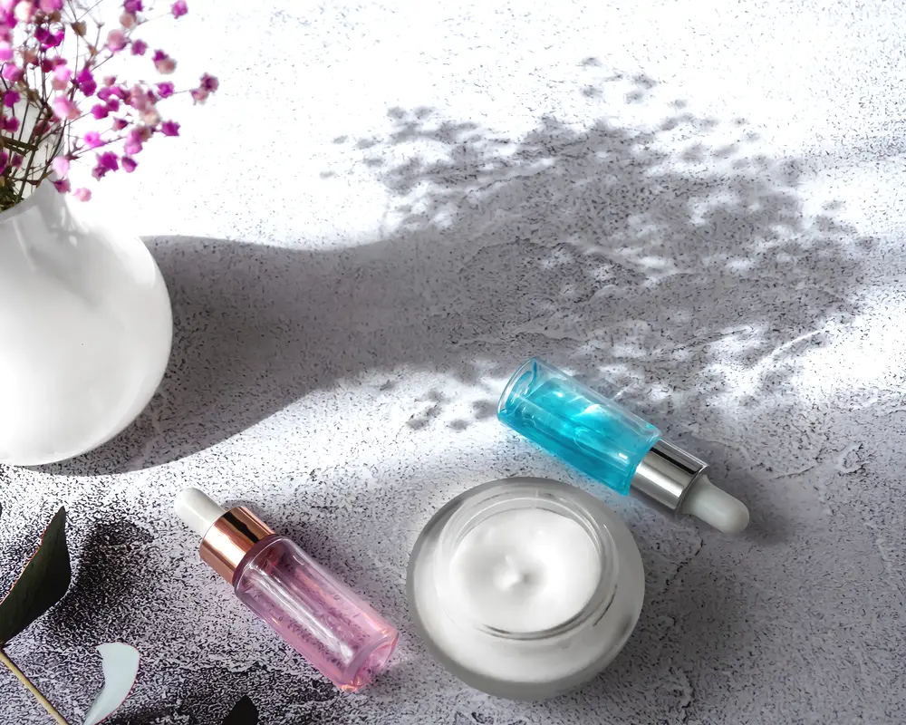

A Simple Guide to Med Spa Tipping Etiquette
Most of the time, you do not tip for medical treatments at a med spa, like Botox or fillers done by a nurse or doctor. You usually do tip for spa style services, like a facial with an aesthetician. It gets messy because a med spa sits in the middle of a medical clinic and a day spa. The easiest way to sort it out is to look at who is doing the treatment.

The General Tipping Rule
A simple way to think about it is this: you tip for personal service, not for medical care. When you get a facial, a light chemical peel, or laser hair removal from an aesthetician, the visit feels very hands on and service focused. They are with you the whole time, paying attention to your comfort and the cosmetic result in a way that feels like a salon visit. In those cases, a tip is common and appreciated.
When a registered nurse, nurse practitioner, or doctor does the treatment, it is considered medical. That includes injectables like Botox and dermal fillers, or more intense procedures like deep laser resurfacing. You would not tip your doctor for a checkup or a dermatologist for a mole removal. Same idea here. These providers are paid on a medical model, and tipping is not part of how their pay is set up.
Who Exactly Are You Tipping?
Knowing the roles in a med spa clears up most of the tipping questions. Your visit will usually be with one of three types of providers.
An aesthetician is a licensed skincare provider who works on the surface of the skin. They do facials, extractions, microdermabrasion, light chemical peels, and sometimes things like laser hair removal or body contouring. When an aesthetician is the one treating you, tipping is standard, similar to what you would do at a regular day spa.
A registered nurse (RN), nurse practitioner (NP), or physician assistant (PA) is a medical provider who works under a doctor. They are licensed to do more invasive treatments. That can include injecting Botox and fillers, doing microneedling, and using certain medical grade lasers. Because these count as medical procedures, you are not expected to tip them.
A doctor (MD) oversees the med spa. They may do the most complex procedures, handle consults, and supervise the rest of the staff. Just like with any other doctor visit, you do not tip a doctor.
How Much to Tip, If You Do
If you see an aesthetician and want to tip, the amount is your call. Many people just follow what they already do for other beauty services like hair or massage. A tip here is a simple thank you for good care and attention to the details. It tells the provider you noticed the work they put into your comfort and your skin.
A tip is optional. It is extra. Some people like to hand cash directly to the provider, others add it to a card at the front desk. Both are usually fine.
Some med spas have a no tipping policy. They choose to pay staff a higher set rate and keep pricing clear on the menu. That takes the awkward back and forth out of it for clients and keeps the focus on the treatment itself. You will see this more often in places like Los Angeles.
When in Doubt, Ask Politely
If you are not sure about a med spa's tipping setup, just ask the front desk when you check in or out. It is a normal question they hear all the time. You can say something simple like, "What is your policy on gratuities?" They can tell you if they accept tips and for which providers.
It is better to ask the front desk than to ask the person who just treated you. That keeps it easy for everyone. Planning this part before your visit also makes it easier to budget for the day. It helps to understand how the price list works and what fees might show up. Tipping, or not tipping, is one piece of that total cost.
What About Packages or Memberships?
Packages and memberships can make tipping feel less clear. If you bought a series of six facials at a discount, it is fair to wonder if the tip should be on the full price or the lower package price.
A simple approach is to tip based on the original price of the service. Your aesthetician is doing the same facial either way, no matter what deal you used. Tipping on the full value is one way to recognize that. That said, it is a guideline, not a rule. Your budget and how happy you are with the visit matter more. Any honest thank you, big or small, is fine.
Tipping should not be the part that stresses you out. The point of going to a med spa is to take care of yourself and your skin. Focus on getting a safe treatment and results you like. If you decide to tip, it is just an extra thank you, not a requirement.